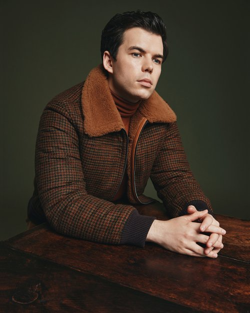
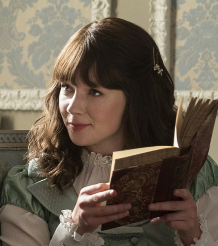
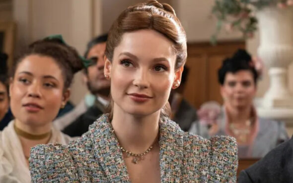
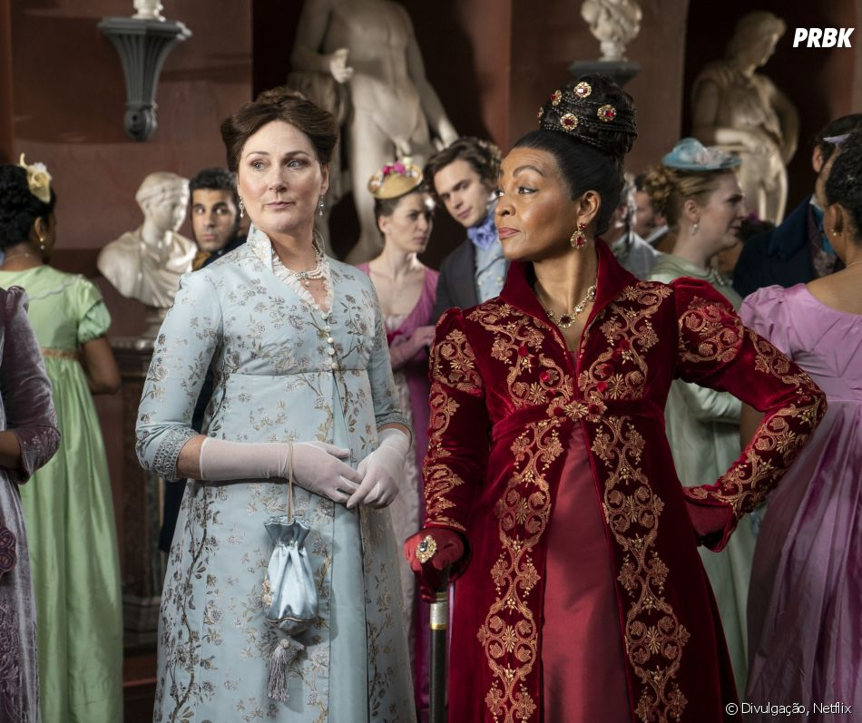
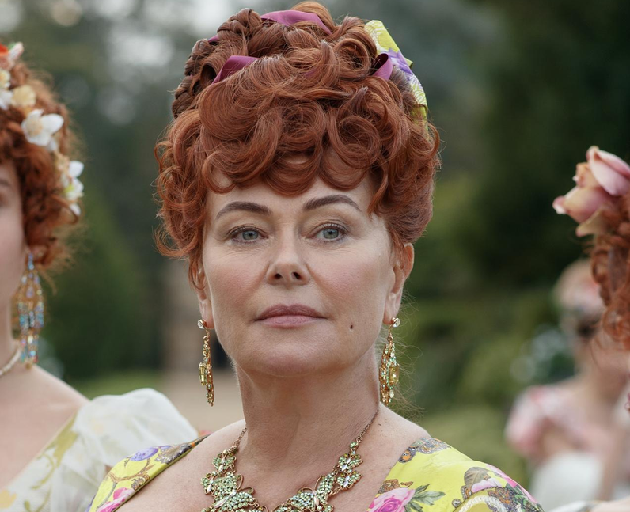
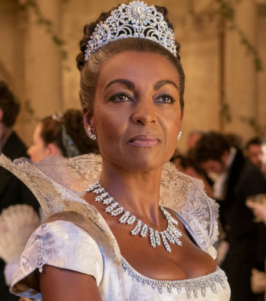
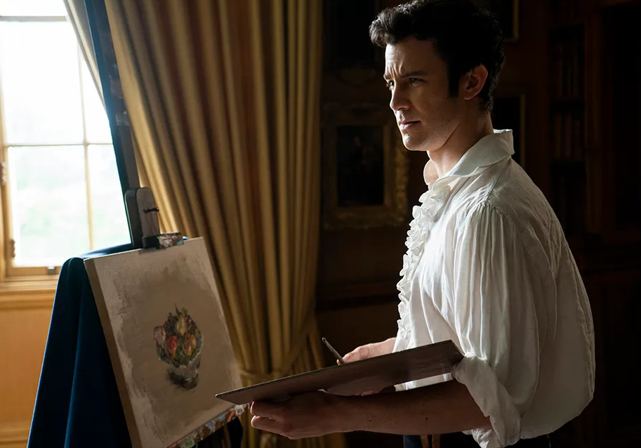
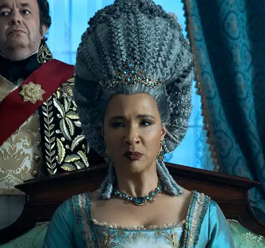
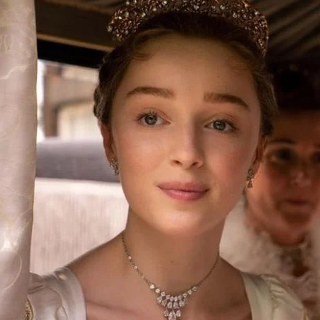
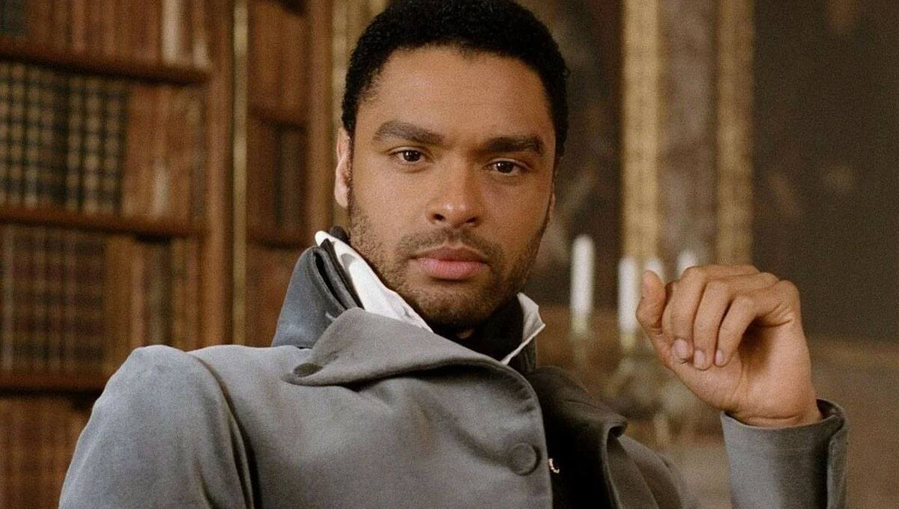

Baseada no livro best-seller de Julia Quinn, Bridgerton mergulha no mundo sensual, luxuoso e competitivo da alta sociedade londrina do início do século 19. Na época, a família Bridgerton, composta por oito irmãos, se esforça para lidar com o mercado de casamentos, os bailes suntuosos de Mayfair e os palácios aristocráticos de Park Lane. Daphne Bridgerton (Phoebe Dynevor), a filha mais velha do respeitado clã, se encontra à procura de um marido adequado. Como seus pais, ela gostaria de se casar por amor, mas o irmão mais velho atrapalha seus planos e torna ainda mais difícil sua busca. Quando Daphne conhece o duque de Hastings (Regé-Jean Page), o solteiro mais requisitado da temporada, as faíscas brilham entre os dois. Não bastasse o fato de ambos agirem como se não estivessem interessados um pelo outro, um escândalo preparado por Lady Whistledown (na voz de Julie Andrews) faz com que o nome de Daphne seja manchado. Para se defender das calúnias, ela decide se aliar ao rebelde duque, colocando à prova os valores e as aparências da elite de Londres.
Penelope Featherington
Colin Bridgerton
Eloise Bridgerton
Francesca Bridgerton
lady Violet Bridgerton
Lady Portia Featherington
Lady Danburry
benedith Bridgerton
Queen charlotte
Daphne Bridgerton
Simon